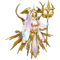
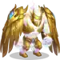

Mejores equipos de Valdur y Echo - Hero Wars: Dominion Era
Se consolidaron ocho formaciones únicas a partir de las pruebas proporcionadas. Los equipos repetidos aparecen una sola vez y el resultado de 10-0 solo se muestra cuando se informó expresamente. Estos resultados corresponden a enfrentamientos concretos y no garantizan el mismo rendimiento con todos los niveles de Tótem, rangos de Fusión o tiempos de activación manual.
Equipo 1
Formación recomendada; no se proporcionó rival ni marcador.
Equipo 2
Probado contra: Brustar, Rigel, Mort, Solaris, Tenebris (marcador no proporcionado) · Venció 10-0 contra Rigel, Mort, Solaris, Iyari, Tenebris
Equipo 3
Probado contra: Brustar, Rigel, Solaris, Iyari, Tenebris (marcador no proporcionado)
Equipo 4
Venció 10-0 contra Brustar, Rigel, Solaris, Iyari, Tenebris · Venció 10-0 contra Rigel, Mort, Solaris, Iyari, Tenebris
Equipo 5
| Equipo 5 |
|---|
| Valdur | Tenebris |  Solaris |  Alecto Alecto |  Rigel |
Venció 10-0 contra Brustar, Rigel, Solaris, Iyari, Tenebris · Venció 10-0 contra Rigel, Mort, Solaris, Iyari, Tenebris
Equipo 6
Venció 10-0 contra Rigel, Mort, Solaris, Iyari, Tenebris
Equipo 7
Venció 10-0 contra Rigel, Mort, Solaris, Iyari, Tenebris
Equipo 8
Venció 10-0 contra Rigel, Mort, Solaris, Iyari, Tenebris